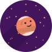
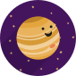
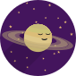

-
Nuestro Sol es una estrella que tiene 4,500,000,000 años.
SOL
-
Es el planeta más pequeño del sistema solar. Un día equivale a 59 días terrestres, pero un año equivale a 88 días.
MERCURIO
-
Es el planeta más caliente aunque no sea el más cercano. Rota en dirección contraria a los demás planetas. Y es visible a simple vista.
VENUS
-
Nuestro planeta hogar está cubierto en un 70% por agua. Su atmósfera tiene mucho oxígeno y nos protege de los meteoritos.
TIERRA
-

Se le conoce como el 'planeta rojo' porque en su suelo hay hierro oxidado. Existe evidencia de la existencia de agua y se sospecha que podría haber tenido seres vivos.
MARTE
-

Es el planeta más grande del sistema solar. La Gran Mancha Roja que tiene es producida por una tormenta de nubes.
JUPITER
-

Planeta gaseoso con un grupo de 7 anillos de hielo y roca.
SATURNO
-
Planeta gélido de coloración azul debido al metano. También tiene unos anillos. Además, rota de lado.
URANO
-
Otro planeta gélido compuesto por agua, amoniaco y metano. Es el planeta más lejado al Sol y tarda 165 años terrestres en darle la vuelta.
NEPTUNO
Fuente: https://spaceplace.nasa.gov/